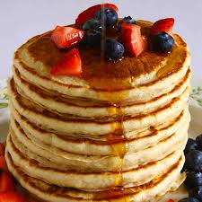

Simple Sponge Cake

Click here for Full Menu
Ingredients
- 3 eggs
- 100g castor sugar
- 85g self-raising flour
Notes on ingredients
- Castor Sugar
- Finely granulated white sugar.
- Self-raising flour
-
A pre-mixed combination of flour and leavening agents (usually salt and
baking powder).
Method
- Preheat the oven to 190°C.
- Grease a 20cm round cake pan.
-
In a medium bowl, whip together the eggs and castor sugar until fluffy.
- Fold in flour.
- Pour mixture into the prepared pan.
-
Bake for 20 minutea in the preheated ovn, or until the top of the cake
springs back when lightly pressed.
- Cool in the pan over a wire rack.